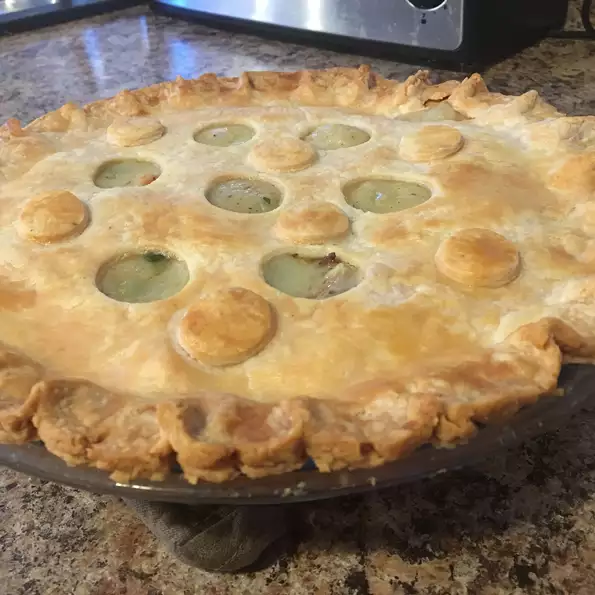

Chicken Pot Pie

Description
Every home cook needs a good chicken pot pie recipe in their repertoire.
On the hunt for a new family favorite? You're in luck! This homemade chicken pot pie definitely deserves a permanent spot in your recipe box.
Ingredients
- Boneless, skinless chicken breasts (cut into cubes) are ideal for making classic chicken pot pie.
- This chicken pot pie recipe calls for the usual suspects: peas, carrots, onions, and celery.
You could toss in some mushrooms or green peppers if you want to incorporate more veggies.
- The chicken pot pie filling starts with a roux made with butter and all-purpose flour.
- Achieve the perfect cozy flavor with salt, pepper, and celery seed. Of course, you can add more seasonings to suit your taste.
- Chicken broth and milk add depth of flavor and help create a smooth and decadent chicken pot pie filling consistency.
- You'll need two unbaked pie crusts.
If you opt for the homemade route, you can't go wrong with our Butter Flaky Pie Crust recipe — but store-bought is perfectly fine.
Steps
- Boil the cubed chicken with the carrots, peas, and celery for about 15 minutes. Drain and set aside. Cook the onions in butter until they're translucent,
then stir in the flour and seasonings. Add the chicken broth and milk and simmer until the filling is thick.
- Place the chicken-vegetable mixture in an unbaked pie crust. Pour the chicken broth mixture over it.
Cover with the top crust, seal the edges, and cut slits in the top to allow the steam to escape.
Bake until the pastry is golden brown and the filling is bubbly.